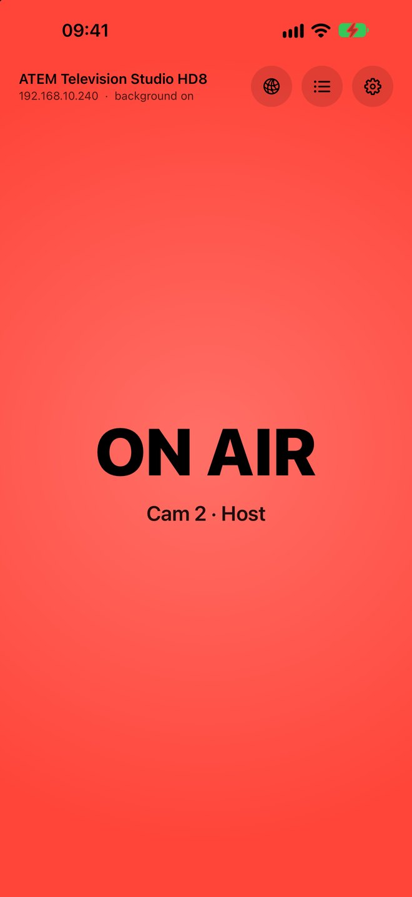
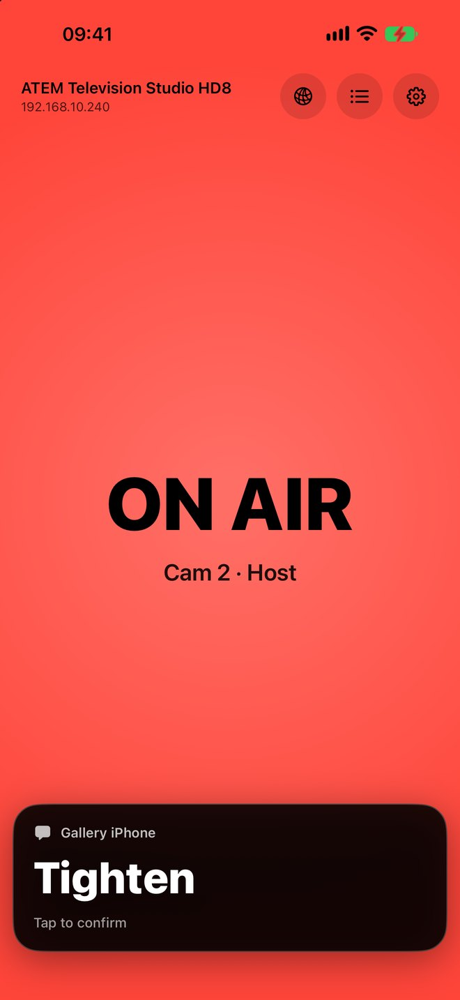
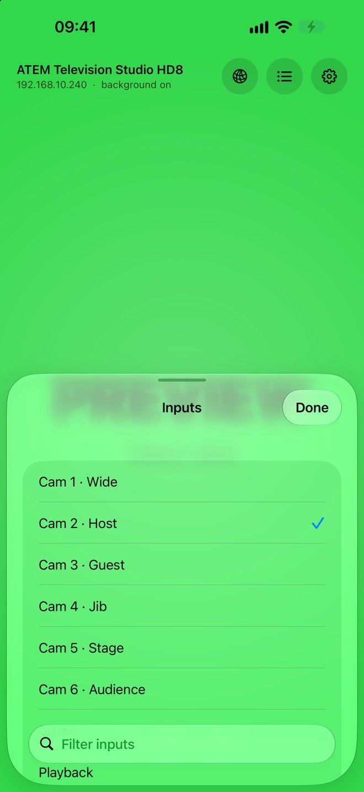

ATEM Tally
Сигнал эфира для оператора камеры.
- iPhone
- Apple Watch
- ATEM Mini
- Television Studio
- Constellation
Закрепите телефон рядом с видоискателем: весь экран краснеет, когда ваша камера в эфире, и зеленеет, когда она в превью. Это видно через всю студию, а Apple Watch коротко вибрирует в момент переключения.



Эфир, превью, ожидание
Красный — вы в программе, зелёный — в превью, тёмный — ожидание. Внизу видно, какие входы сейчас в эфире, а значок AUX подсказывает, что камера выведена на дополнительный выход. Пока приложение открыто, экран не гаснет.
Apple Watch
Часы повторяют цвет эфира и коротко вибрируют, когда вы выходите в эфир, попадаете в превью и уходите из эфира. Взгляд остаётся на кадре.
Сигналы от режиссёра
Если за пультом работает ATEM Control, оттуда вам пришлют короткий сигнал — «Приготовиться», «Крупнее», «Шире», «Пошёл» — или строчку, набранную лично для вас. Она появится поверх tally крупным шрифтом и отдастся вибрацией, а потом исчезнет сама; коснитесь её, и режиссёр увидит, что вы прочитали. Сигналы идут от телефона к телефону по локальной сети, мимо микшера, и выключаются в настройках.
Быстрая настройка
Приложение само находит микшеры в сети и запоминает те, к которым вы подключались; адрес можно ввести и руками. Дальше выберите свою камеру по названиям входов, заданным на микшере.
ATEM Tally
A tally light for the camera operator.
- iPhone
- Apple Watch
- ATEM Mini
- Television Studio
- Constellation
Mount the phone next to your viewfinder: the whole screen turns red when your camera is live and green when it is on preview. You can see it from across the studio, and the Apple Watch taps your wrist the moment it changes.
On air, preview, standby
Red means you are on program, green means preview, dark means standby. The inputs that are live appear at the bottom, and an AUX badge shows when your camera is routed to an auxiliary output. The screen stays on while the app is open.
Apple Watch
The watch mirrors the tally and taps your wrist when you go on air, when you land on preview and when you leave air. Your eyes stay on the shot.
Cues from the gallery
When the person at the switcher runs ATEM Control, they can send you a short cue — Stand by, Tighten, Wider, Go — or a line typed for you alone. It appears over the tally in large type and taps your wrist, then clears itself; tap it and they see that you have read it. Cues travel phone to phone over the local network, never through the switcher, and they can be switched off in settings.
Quick setup
The app finds switchers on your network by itself and remembers the ones you used; an address can be typed in too. Then pick your camera from the input names set on the switcher.